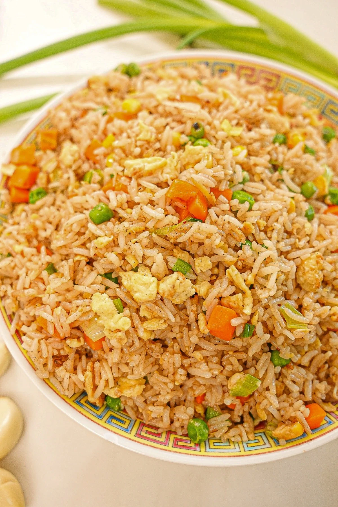

Rice Recipe
Home

Fluffy, flavorful rice cooked to perfection, a versatile side dish that complements any meal.
Ingredients
- Rice
- Water
- Salt
- Cooking Oil
Steps
- Rinse the rice under cold water until the water runs clear.
- In a pot, bring water to a boil and add salt.
- Add the rinsed rice to the boiling water.
- Reduce heat to low, cover the pot, and simmer for about 15-20 minutes until the rice is tender and water is absorbed.
- Remove from heat and let it sit covered for 5 minutes.
- Fluff the rice with a fork before serving.
Serve as a side dish with your favorite main course.